Cubical Persistent Homology
In this example, we will demonstrate computing sublevel set persistent homology of time series and image data. We will need the following packages.
using Ripserer
using Images
using PlotsWe will use two data sets in this example. The first will be a curve:
n = 1000
x = range(0, 1; length=n)
curve = sin.(2π * 5x) .* x
curve_plot = plot(curve; legend=false, title="Curve")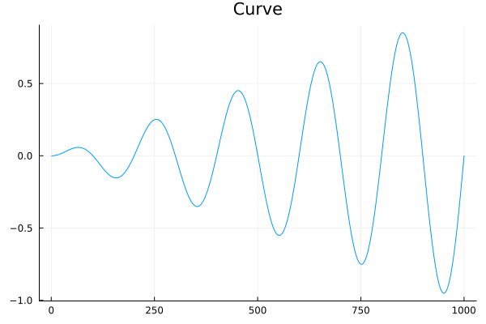
The other will be the Event Horizon Telescope picture of a black hole. We will use a small, 240×240 pixel version of the image. Ripserer should have no problems with processing larger images, but this will work well enough for this tutorial.
{kind=link}
blackhole_image = load(
joinpath(@__DIR__, "../assets/data/240px-Black_hole_-_Messier_87_crop_max_res.jpg")
)
blackhole_plot = plot(blackhole_image; title="Black Hole")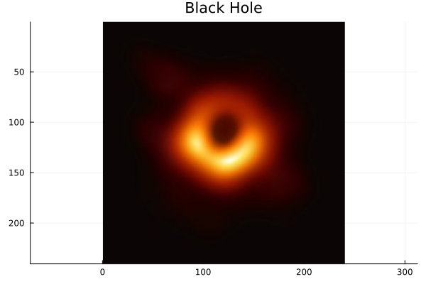
To use the image with Ripserer, we have to convert it to grayscale.
blackhole = Gray.(blackhole_image)One-dimensional Case
Sublevel set persistent homology provides a stable description of the critical points of a function. The zeroth persistent homology group $H_0$ corresponds to its local minima. To compute this with Ripserer, we use cubical persistent homology. Note that there is no information in $H_1$, since the function is one-dimensional, so we only grab the first part of the result.
result, _ = ripserer(Cubical(curve))
plot(curve_plot, plot(result))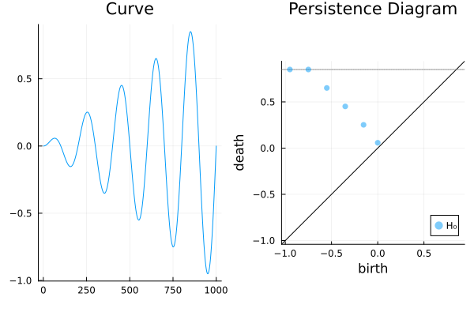
To see which minimum each interval corresponds to, we compute representatives by setting reps=true.
result, _ = ripserer(Cubical(curve); reps=true)2-element Vector{PersistenceDiagram}:
6-element 0-dimensional PersistenceDiagram
0-element 1-dimensional PersistenceDiagramThe infinite interval's representative will include the whole function. To plot a representative, simply pass the interval along with the data to plot. An alternative way to plot the same thing is to get the representative of the interval first and then plot that in the same way. Let's use both ways in the following example.
infinite_interval = only(filter(!isfinite, result))
plt = plot(
representative(infinite_interval),
curve;
legend=false,
title="Representatives",
seriestype=:path,
)
for interval in filter(isfinite, result)
plot!(plt, interval, curve; seriestype=:path)
endTo get the locations of the minima, extract the critical simplices from intervals. Since simplices act like collections of vertex indices, and zero-dimensional representatives have a single point each, we can use only to extract them. Cubical simplices store vertices as CartesianIndex, so we need to index into the x-values with them to plot them.
min_indices = [only(birth_simplex(int)) for int in result]
min_x = eachindex(curve)[min_indices]
scatter!(plt, min_x, curve[min_x]; color=1:6, markershape=:star)
plot(plt, plot(result; markercolor=1:6, markeralpha=1))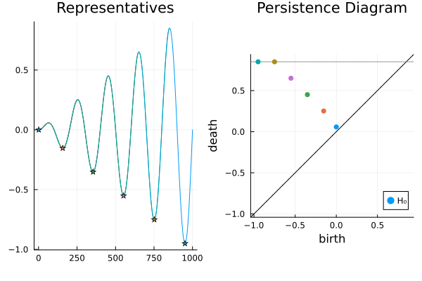
Note that each interval's birth is equal to the value of the corresponding local minimum and its death is equal to the higher of the two adjacent maxima. An intuitive way of thinking about the result is imagining you pour water in the curve. Water is collected in a valley and once it reaches a local maximum, it starts pouring in the adjacent valley.
Dealing With Noise
Let's add some noise to the curve from earlier and try to repeat the example.
noisy_curve = curve .+ rand(length(curve))
plot(noisy_curve)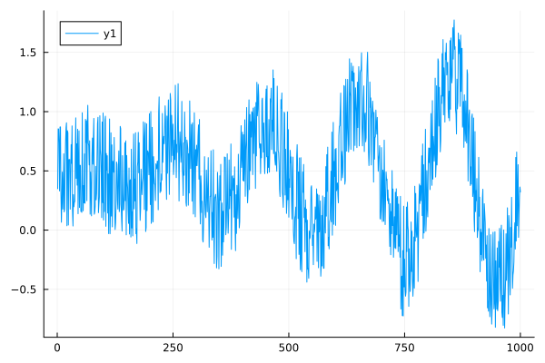
Compute the persistence diagram and plot it. The persistence argument to plot plots the diagram in birth, persistence coordinates, which will make the level of noise easier to see.
noisy_result, _ = ripserer(Cubical(noisy_curve); reps=true)
plot(noisy_result; persistence=true)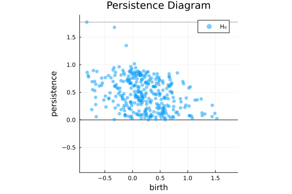
We can see a lot of noise in the diagram, but notice how all of it is below 1, which is exactly the amount we added. We can filter this out by supplying the cutoff argument to ripserer. This will ignore all intervals below this cutoff.
filtered_result, _ = ripserer(Cubical(noisy_curve); reps=true, cutoff=1)
plot(filtered_result; persistence=true)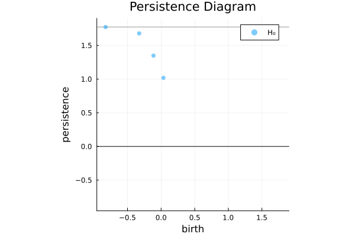
We could achieve the same result by simply filtering the resulting diagram.
filter(int -> persistence(int) > 1, noisy_result) == filtered_resulttrueKeep in mind, however, that for very large diagrams, collecting representatives on all of the noise could make ripserer much run slower. In that case, it is recommended to use cutoff, rather than filtering.
Now we can repeat what we did earlier.
infinite_interval = only(filter(!isfinite, filtered_result))
plt = plot(
representative(infinite_interval),
noisy_curve;
legend=false,
title="Representatives",
seriestype=:path,
)
for interval in sort(filter(isfinite, filtered_result); by=birth)
plot!(plt, interval, noisy_curve; seriestype=:path)
end
min_indices = [first(birth_simplex(int)) for int in filtered_result]
min_x = eachindex(curve)[min_indices]
scatter!(
plt, min_x, noisy_curve[min_x]; color=eachindex(filtered_result), markershape=:star
)
plot(plt, plot(filtered_result; markercolor=eachindex(filtered_result), markeralpha=1))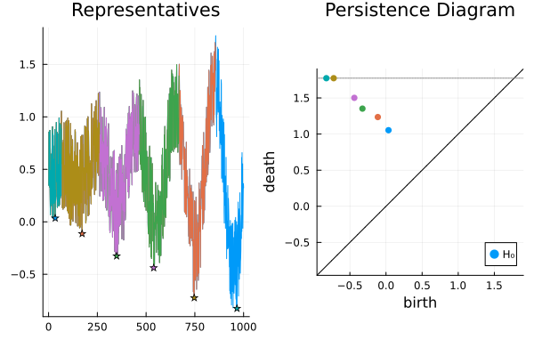
The result we got is very similar even though the data set was very noisy.
Two-dimensional Case
Now let's do a similar thing for a 2d example. Nothing is stopping us from going into higher dimensions, but we will skip those. The principles are the same. Instead of looking for local minima, let's look for local maxima. To do that, we have to invert the image.
result = ripserer(Cubical(-blackhole))
plot(blackhole_plot, plot(result))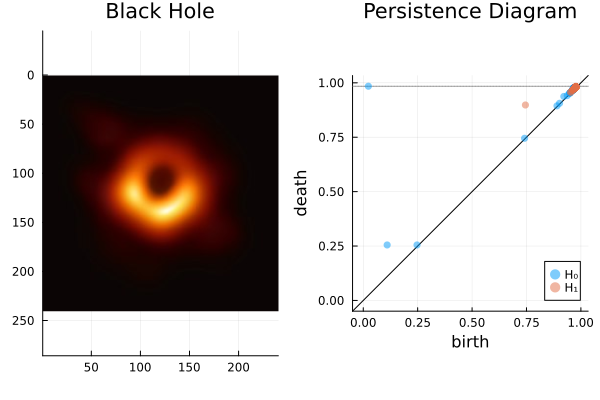
We notice there are quite a lot of intervals along the diagonal. These correspond to the local geometry of the image, so we are not interested in them right now. To filter them out, we set a cutoff.
result = ripserer(Cubical(-blackhole); cutoff=0.1)
plot(blackhole_plot, plot(result))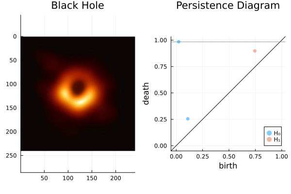
Like earlier, we can show the local extrema in the image. We will show a different way to plot them. Let's use the threshold argument with plot, which only keeps parts of the representative with a diameter equal to or lower than threshold. If we needed a strict <, we could use threshold_strict.
result = ripserer(Cubical(-blackhole); cutoff=0.1, reps=true)
plt = plot(blackhole_image; title="Black Hole")
for interval in result[1]
plot!(plt, interval, blackhole; threshold=birth(interval))
end
plot(plt, plot(result[1]; markercolor=2:3, markeralpha=1))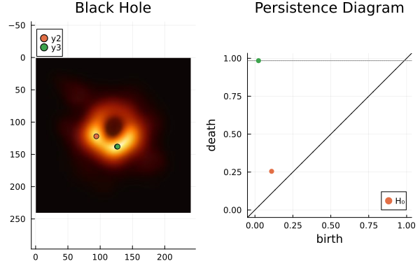
Some maxima have multiple values because more than one pixel in the image has the same value. Using birth_simplex instead of plotting the filtered representative would only show one of each.
Unlike in the previous example, we now also have access to $H_1$, which corresponds to the cycles in the image. Let's try to plot the representative of $H_1$.
plt = plot(blackhole_image; title="Black Hole")
plot!(plt, only(result[2]), blackhole; label="H₁ cocycle", color=1)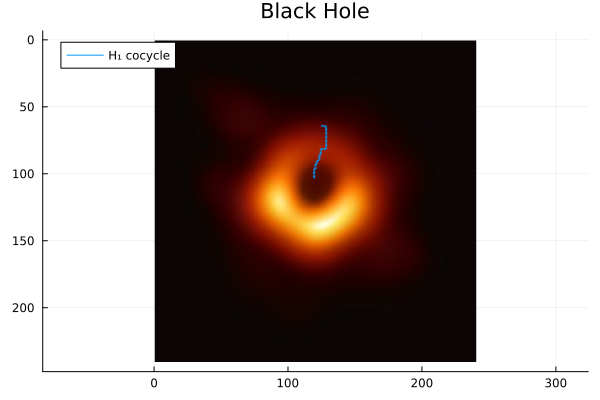
Notice that the result is not a cycle, but rather a collection of pixels that would destroy the cycle if removed. The reason is that Ripserer computes persistent cohomology by default. The persistence diagrams of persistent homology and persistent cohomology are the same, but persistent cohomology is much more efficient to compute. The representatives it finds, however, tend to not be as informative. Keep this in mind when trying persistent homology out for larger datasets; it can take a very very long time. This case is quite small and computing persistent homology should pose no problem. We compute persistent homology with the argument alg=:homology.
Ripserer currently can't compute infinite intervals in dimensions higher than zero with persistent homology.
result = ripserer(Cubical(-blackhole); cutoff=0.1, reps=true, alg=:homology)
plot!(plt, only(result[2]), blackhole; label="H₁ cycle", color=3)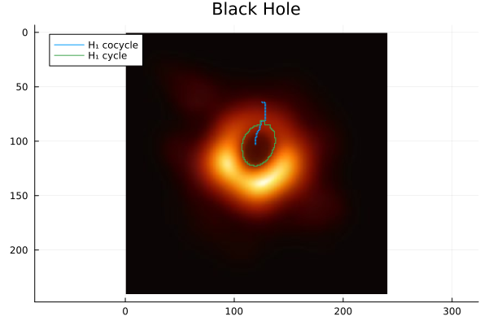
We have successfully found the hole in a black hole.
This page was generated using Literate.jl.